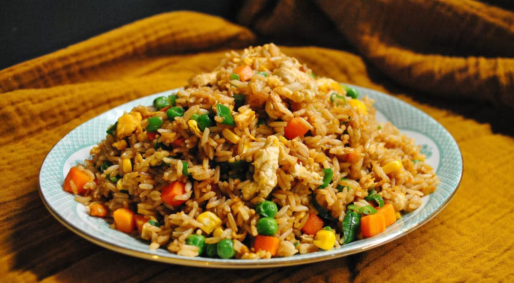

приготовление:
-
Промыть 3 чашки риса трижды. Использовать воду в пропорции 1:1. Варить рис как обычно: после закипания — на огне #4–5 под крышкой около 10 минут, пока вода не выпарится.
-
Тем временем подготовить овощи. Очистить и натереть на корейской тёрке 2 моркови. Залить кипятком 0,5 упаковки замороженного горошка, чтобы разморозился. Мелко нарезать 1 пучок chives или зелёного лука.
-
Разбить 4 яйца в мисочку, добавить 0,5 ч.л. соли и взбить вилкой до однородности.
-
Когда рис сварится, снять с огня и оставить под крышкой на пару минут. Затем распушить вилкой, чтобы вышел пар.
-
Разогреть вок на сильном огне, налить щедрое количество растительного масла. Уменьшить огонь и выложить морковь. Обжаривать, пока не станет мягкой.
-
Пока жарится морковь, приготовить заправку: в небольшой миске смешать 1 ст.л. соуса тамари, 1 ч.л. соевого соуса, 0,5 ч.л. соли, 0,5 ч.л. сахара и, по желанию, 0,5 бульонного кубика.
-
Добавить в вок горошек и 0,5 банки кукурузы. Влить взбитые яйца поверх овощей. Через 20–30 секунд, когда они начнут схватываться, выложить рис. Перемешивать снизу вверх, чтобы рис прилип к яйцу. Затем увеличить огонь и обжаривать всё 2–3 минуты в стиле стир-фрай. Снова уменьшить огонь, влить заправку, перемешать, потом вновь увеличить огонь и жарить ещё пару минут. Добавить нарезанный зелёный лук, тщательно перемешать — и можно подавать.